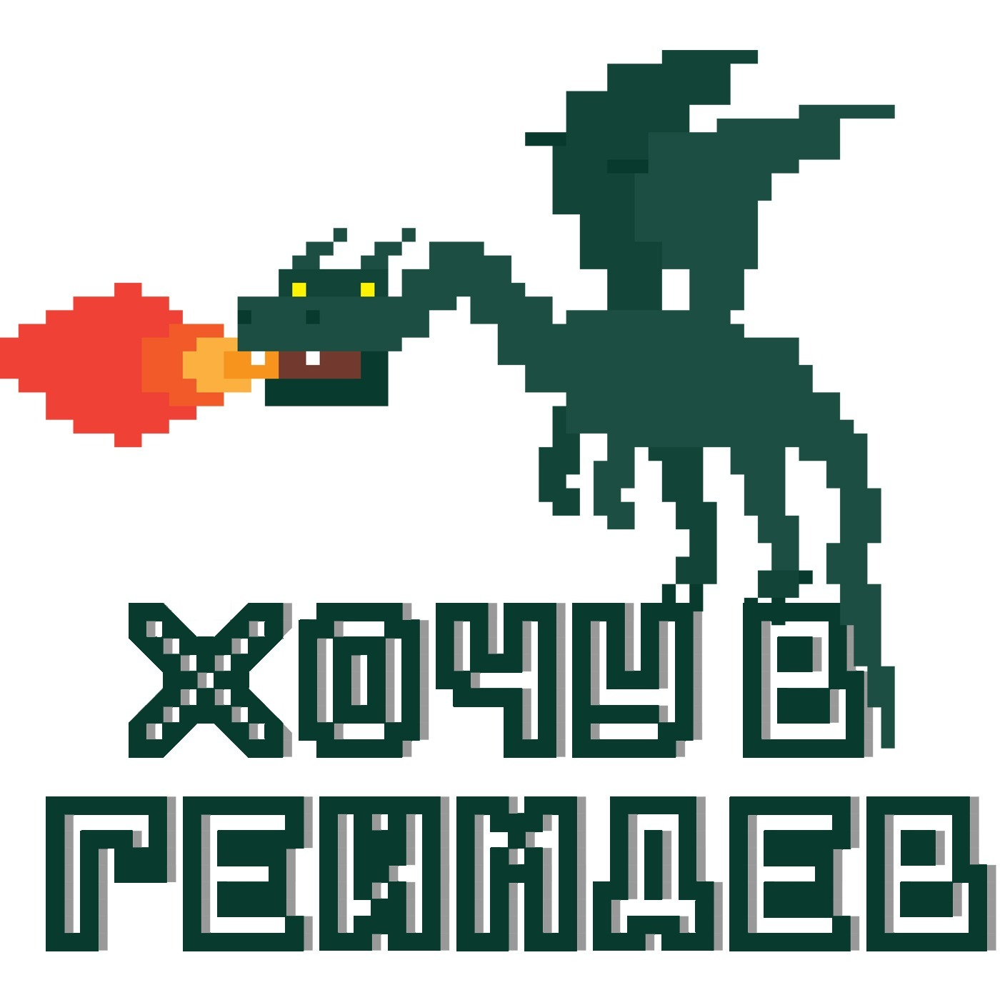
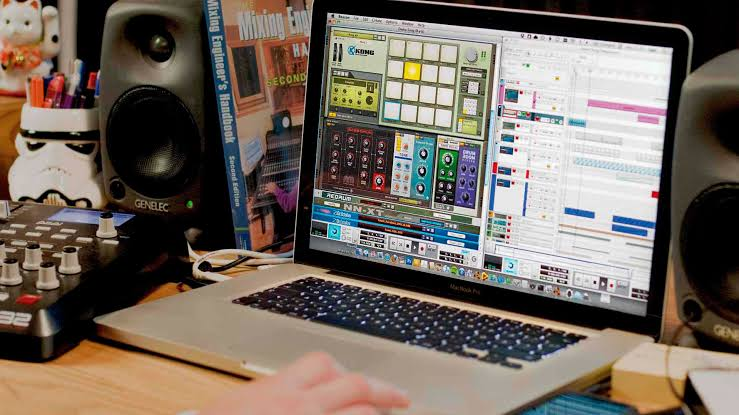
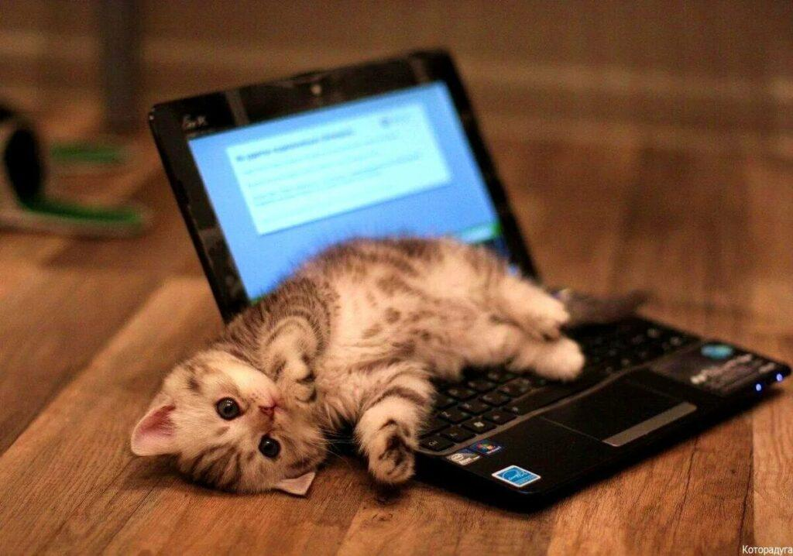

Маленькие игры
Небольшие игровые проекты, которые помогают мне изучать программирование и разработку игр.

Начинающий разработчик маленьких инди-игр
Я пишу код у себя дома, пью флэт уайт, слушаю музыку и постепенно превращаю свои идеи в маленькие игровые миры.
Узнать обо мнеЯ начинающий разработчик маленьких инди-игр. Мне нравится создавать что-то своими руками — от первой строчки кода до момента, когда маленькая идея наконец начинает работать.
Пока мои проекты небольшие, но я стараюсь постоянно учиться, экспериментировать и делать каждую следующую игру немного лучше.
Мне нравится спокойная домашняя атмосфера: компьютер, музыка в наушниках, чашка хорошего кофе и несколько часов свободного времени, чтобы заниматься любимым делом.

Большую часть времени я провожу за компьютером. Иногда я пишу код часами, пытаясь заставить какую-нибудь простую механику работать именно так, как я задумал.
А иногда просто включаю музыку и начинаю экспериментировать с новой идеей.
Небольшие игровые проекты, которые помогают мне изучать программирование и разработку игр.
Эксперименты с игровыми механиками, необычными идеями и атмосферой.
Хочу постепенно создавать всё более интересные проекты и однажды выпустить свою большую игру.

Конечно, ни один домашний разработчик не обходится без помощника.
Котики особенно хорошо умеют проверять качество клавиатуры, занимать самое удобное место перед монитором и напоминать, что иногда нужно сделать перерыв.

Флэт уайт — мой небольшой ритуал перед работой. Хороший кофе помогает настроиться на несколько часов спокойной разработки.
Хотя иногда кажется, что половина процесса разработки состоит из кофе, музыки и попыток понять, почему код снова не работает.
Я только начинаю свой путь разработчика, поэтому впереди ещё очень много вещей, которым предстоит научиться.
Хочу создавать больше игр, изучать новые технологии, улучшать свои проекты и постепенно собрать здесь небольшую коллекцию своих работ.
«Большие игры тоже когда-то начинались с маленькой идеи.»
Если тебе интересны инди-игры, программирование или просто уютные маленькие проекты — буду рад знакомству.
📧 Email: example@mail.com
💬 Telegram: @archie